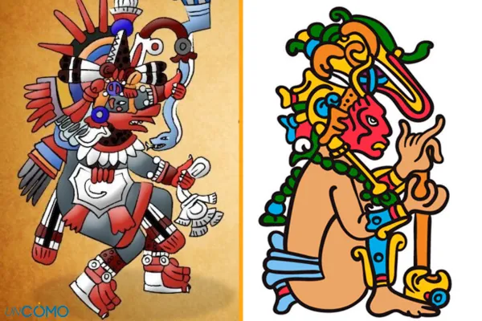
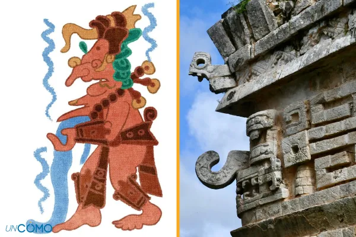
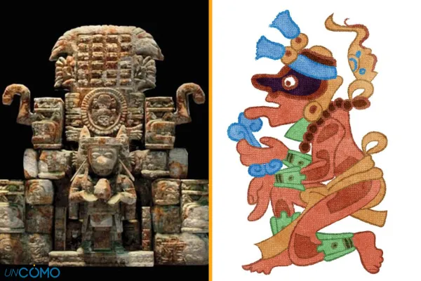
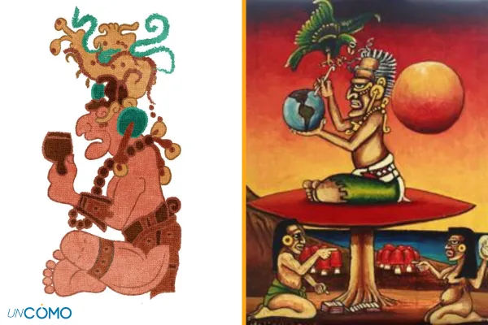
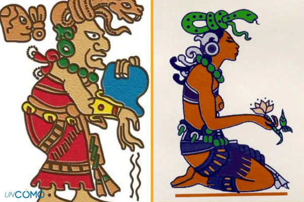
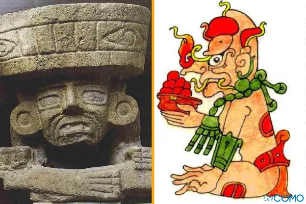
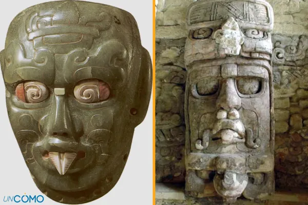
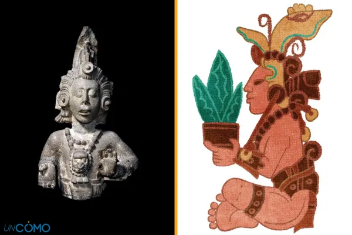
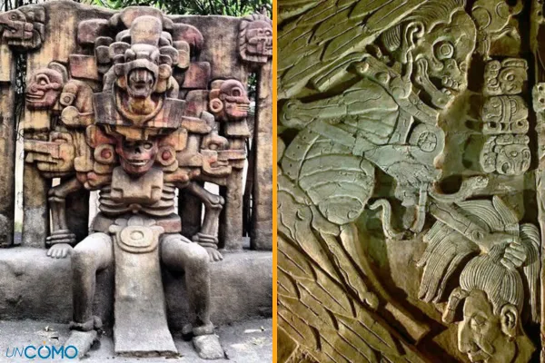

DIOSES MITOLOGÍA MAYA
| DIOSES | DEFINICIÓN | FOTO |
| BULUCCHABTAN | No solo es el dios maya de la guerra, sino que también se le relaciona con la destrucción, los sacrificios humanos y la muerte repentina y violenta. Para representarle, los mayas usaban una línea de puntos negros sobre sus ojos y sus mejillas, a modo de máscara. |  |
| CHAAC | Es el dios de la lluvia para los mayas. Se trata de uno de los dioses más populares en esta cultura, pues fue de los más alabados en el panteón maya. A través de la lluvia proporciona abundancia y prosperidad, así como fertilidad.Los mayas creían que cuando llovía la deidad bajaba a la Tierra a visitar a los mayas y les proporcionaba cosechas abundantes. Por ello, en zonas secas como Yucatán, es donde más se veneraba a este dios. Asimismo, muchos mayas relacionaron a Chaac como referente y símbolo de los cuatro puntos cardinales. Su representación siempre ha sido diversa. A veces con rasgos femeninos, otras con rasgos masculinos, pero siempre con un punto en común: aspecto de reptil. |  |
| EKCHUAH | Es el dios maya del cacao. Es muy relevante y popular entre los vendedores ambulantes, puesto que le veneraban día tras día para que sus ventas fueran óptimas y exitosas. |  |
| HUNABKU | Es considerado el padre de todos los dioses. A través de su propio nombre, cuyo significado es "un solo dios", los mayas le otorgaron el primer lugar en el mundo de los dioses, la máxima importancia y relevancia. Este es el único dios que posee vida para ellos y a través de él proceden no solo el resto de deidades, sino también la construcción de todo lo que les rodeaba. Por ello, representa el todo y la nada. |  |
| ITZAMNA | Es una de los dioses más multifacéticos de la cultura maya. Es el
soberano del cielo, el verdadero amo del día y la noche. Si bien Hunab Ku fue considerado el
padre de todos los dioses, para los mayas de la península del Yucatán fue Zamná el verdadero
creador del todo, por lo que siempre se ha considerado uno de los dioses principales de su
mitología.
Este dios se puede ver representado como un dragón alado de dos cabezas, el cual vierte agua sobre la tierra desde el cielo. Aunque también se le puede ver como una figura de pájaro con rasgos de serpiente o, incluso en su forma humanoide, como un anciano de ojos y nariz grande, pómulos hundidos, barba y sin dientes. |
 |
| IXCHEL | Como en cualquier creencia politeísta que se precie, no puede faltar la
diosa del amor maya. Es esposa de Itzamná, dios de la sabiduría. Si a
su marido se le representa a través del cielo y el sol, ella es la diosa de la luna maya, de la
fertilidad, de los embarazos y los nacimientos, pero también se asocia con la vegetación, con
los trabajos manuales y con la medicina.Se trata de la diosa femenina más importante para los
mayas y por ello se encuentra entre los
principales dioses de esta cultura. Mientras Itzamná se dejaba ver durante las horas de sol,
Ixchel solo se dejaba ver por las noches, cuando salía la luna.
Pero además del amor, Ixchel también está relacionada con el agua en su forma más destructiva, como pueden ser las inundaciones y otros desastres naturales causados o relacionados con este elemento. La representación de la diosa de la luna se hacía a través de una anciana con símbolos relacionados con la muerte (huesos cruzados en su falda, serpiente retorcida en la cabeza...) y con el agua como un cántaro que se vierte sobre la tierra. |
 |
| KAUIL | Kauil, dios del fuego, es descrito por los mayas como el padre y la madre de los humanos. Para su cultura, el fuego es un elemento básico y con un papel trascendental. Esta civilización creía que aquel que era capaz de dominar el fuego, era capaz de controlar su violencia interior. Son numerosos los rituales dedicados a este dios que todavía a día de hoy siguen realizándose a través de fogatas y hogueras, puesto que la creencia dice que, después de interactuar con ellas, se sale renovado: se quema lo malo y se genera energía positiva para recibir todo lo bueno. El dios del fuego maya es representado como una figura ambigua, con nariz larga y boca de serpiente. |  |
| KINICHAHAU | Es uno de los dioses mayas que más debate genera, puesto que se cree que es fruto de dos dioses distintos, pero nunca ha quedado claro de qué dios proviene en realidad, por lo que cada región que le rinde culto puede discrepar en su origen. Para algunos, el considerado dios maya del sol, además de ser el dios maya del sol, se le relaciona con la vida, la prosperidad y la fertilidad de la tierra, así como con la música. Se le suele representar como un hombre viejo, con ojos cuadrados y algo bizco, con dientes incisivos y desgastados y también con una flor de cuatro pétalos. |  |
| YUMKAAX | Es el dios maya del maíz. Su nombre principal significa "señor de los bosques" y es considerado el dios principal de la agricultura. Es un dios benévolo y los mayas tenían prohibido referirse a la muerte frente a él.Se trata del dios más vital y fundamental para los mayas, los cuales basaban su alimentación en la mazorca de maíz. A este dios se le representa como un joven fuerte, apuesto y siempre con una mazorca de maíz en su cabeza, además de una vasija en las manos con tres mazorcas de maíz en ella. |  |
| YUMKIMIL | Es el dios maya de la muerte. Se trata del soberano del inframundo y del infierno, pues reside ahí. Para los mayas, se trata de una deidad malévola, aunque su misión es dar cobijo a los muertos, excepto a aquellos elegidos por la diosa Xtabai, su esposa. Según la mitología maya, el dios de la muerte merodeaba en casa de los enfermos para cazar a sus nuevas víctimas y poder llevárselas consigo al infierno. Así que para poder ahuyentarlo los mayas creían que la mejor opción era gritar lo más fuerte posible para espantarlo y librar a los enfermos de la muerte. |  |